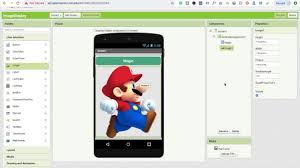

HAWKSTOWE CODER DOJOA place for smart kids to be champions
|

|
What is a coder dojo?


You probably know what a karate dojo is. A coder dojo is similar except that kids learn to code and digital electronics instead of martial arts.
A coder dojo is for academic kids what sports clubs are for kids that love playing sports.
It is a place for academically inclined kids to learn any aspect of technology that interests them, in a social and supportive environment.
How does a coder dojo work?
- There is no formal circulum and kids are free to choose what technology they wish to learn.
- There is minimal chalk and talk and kids learn at their own
pace. They do so by:
- Undertaking beginner tutorials until they gain confidence.
- Working on personal projects of their choosing when they do.
- Occasional group challenges will be organised for those kids wishing to participate.
- Once a year exhibition days will be organised for kids to show off their inventions and software to family and friends.
- One parent or guardian is required for each child under the age of 16.
- Parents manage the behavior of their own children, thus leaving volunteer techers free to concentrate on mentoring.
When, Where & Places?
- When: Every first Saturday of the month
- Maximum places: 4
- Places remaining: 4
- Where:15 Jellis Avenue, South Morang, 3752
Why is it at my private home?
- I am not in a financial position to pay for a public space myself.
- Coder Dojos are strictly non-commercial, so collecting fees from participants to pay for a public space is not an option.
- Neighbouhood and community houses are not willing or able to donate a space.
- Obtaining a donated space, or a grant to pay for one, from the The City of Whittlesea is untenable.
What do participants need to bring with me?
- BYO laptop
- BYO microcontrollers and electronics components if you want to learn about them
- One parent or guardian (required)
What can kids learn?
- Programming languages:
- C/C++
- Python
- HTML, Javascript, PHP (web programming)
- C# (sharp)
- Block programming
- Technology & platforms:
- Unity games
- Web sites
- Microncontrollers
- Arduino
- Microbit
- mBot
- Raspberry Pi Pico
- ESP32
- ESP8266
- Digital electronics
- Robots
- RC devices
- Home automation
- LEDs
- Transistors
- Relays
- Scratch games & stories
- MS Visual Studio and Windows apps
- MIT App Inventor and mobile device apps.
- 3D design and printing with Tinkercad
- Tinkercad Circuits - virtual microcontrollers and digital electronics